Articles
All articles.
Long guides to dance music and club culture, written for listeners.
Every article
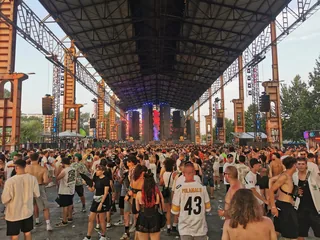
A30List / Europe festivals / ~13 minBest Electronic Music Festivals in Europe 2027, Compared
Fourteen major festivals and seven smaller ones, from Tomorrowland to Garbicz, compared by sound, scale, setting and 2027 dates.
Read article →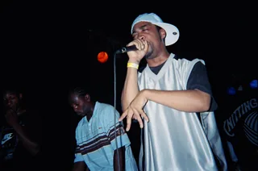
A29Guide / Grime / ~13 minWhat Is Grime Music? Its Sound, History, Artists and Tracks
Cold 140 BPM instrumentals, pirate radio, crews and clashes from East London, and the arguments about who started it.
Read article →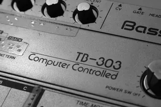
A28Guide / Acid house / ~14 minWhat Is Acid House? From Chicago's TB-303 to the UK Rave Boom
A $40 bass machine, three friends in Chicago, a DJ who played their tape four times in a night, and the British movement that borrowed the name.
Read article →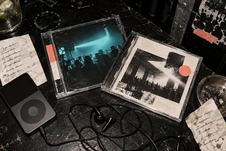
A27List / Spotify playlists / ~8 minBest Spotify Playlists: 12 Human-Curated Picks
Twelve playlists with an identifiable point of view, from KEXP and Pitchfork to Four Tet, Bicep and the electronic underground.
Read article →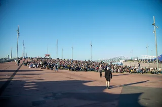
A26Guide / Primavera Sound / ~9 minPrimavera Sound Barcelona 2027: Dates, Location and Music
The Barcelona festival returns to Parc del Fòrum on 3 to 5 June 2027: its waterfront location, scale, music and city programme.
Read article →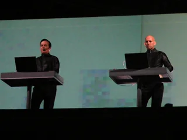
A04Timeline / German music / ~11 minGerman Electronic Music History: From Kraftwerk to Techno
Cologne studios, Düsseldorf electronic pop, Frankfurt trance and the Detroit-Berlin alliance.
Read article →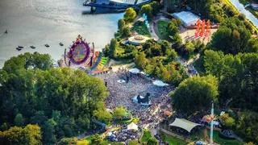
A25Guide / Mysteryland / ~9 minMysteryland Festival: Where It Is, Its History, and 2027
The oldest dance festival in the Netherlands by its own count, on the old Floriade grounds in Haarlemmermeer: when Mysteryland 2027 is, why it skipped 2026, who owns it, and what it plays.
Read article →Sónar Festival Barcelona: History, Music and 2027 Dates
Three days every June in Barcelona since 1994: where Sónar happens, how a festival of advanced music grew to 150,000 people, who owns it now, OFFSónar, and Sónar 2027.
Read article →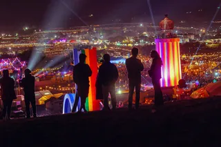
A23Guide / Glastonbury / ~10 minGlastonbury Festival: 2027, Fallow Years and Headliners
Five days most Junes at Worthy Farm in Somerset: when Glastonbury 2027 is, why there was no festival this year, where it is, how big it is, and every headliner by year.
Read article →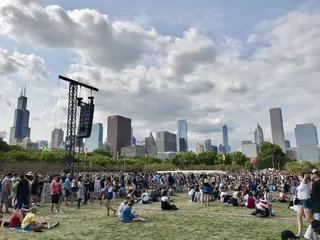
A22Guide / Lollapalooza / ~9 minLollapalooza Chicago: Location, History and the Music
Four days every summer in Grant Park, Chicago: where Lollapalooza happens, how it grew from a farewell tour and what plays across its stages.
Read article →What Is Coachella? 2027 Dates, Location and Music
Two weekends every April at the Empire Polo Club in Indio: when Coachella 2027 is, how long it lasts, how a festival that lost money in 1999 grew, and what plays in the Sahara.
Read article →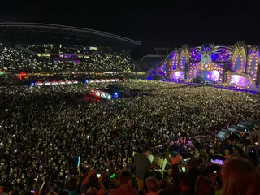
A20Guide / Untold / ~10 minUntold Festival: Where It Is, How Big, and the Music
Four days every August in Cluj-Napoca: when Untold 2027 is, where it happens, how a European Youth Capital party reached 500,000 admissions, and what plays past the main stage.
Read article →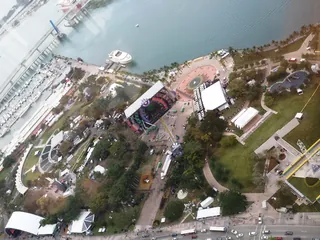
A19Guide / Ultra / ~14 minUltra Music Festival 2027: Miami Dates, Location and Music
Ultra returns to Bayfront Park in Miami on 26 to 28 March 2027: the location, scale, history and music beyond the Main Stage.
Read article →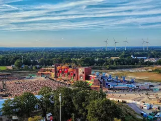
A18Guide / Parookaville / ~11 minParookaville Festival: Where It Is, Who Runs It, the Music
A festival staged as a city on an old RAF airbase at Weeze: where Parookaville happens, how three friends built it, how many people go, who runs it, and what plays there.
Read article →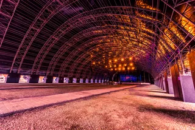
A17Guide / Creamfields / ~11 minCreamfields Festival: Where It Is, How It Grew, the Music
Four days on the Daresbury estate every August bank holiday: where Creamfields happens, how a Liverpool house night grew into it, who owns it, and what plays beyond the Arc Stage.
Read article →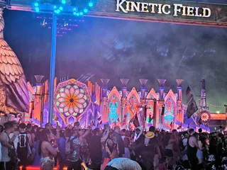
A16Guide / EDC Las Vegas / ~12 minEDC Las Vegas: What It Is, How Big, and the Music
Electric Daisy Carnival at the Las Vegas Motor Speedway: where EDC happens, how half a million people a year grew out of a field in Chino, and what plays past kineticFIELD.
Read article →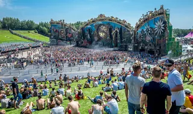
A15Guide / Tomorrowland / ~10 minTomorrowland Festival: Where It Is, How Big, and the Music
A park in Boom, Belgium, that most of the world knows through a livestream: where Tomorrowland happens, how big it is, who owns it, and what plays off the Mainstage.
Read article → A14Guide / Live DJ sets / ~12 min
A14Guide / Live DJ sets / ~12 minWhere to Watch Live DJ Sets: Boiler Room, HÖR, NTS and More
Where to watch DJ sets online, how the main platforms differ, and a route through 62,877 archived recordings.
Read article → A13Guide / London clubs / ~12 min
A13Guide / London clubs / ~12 minBest Electronic Music Clubs in London: History and Where to Go
The best electronic music clubs in London now, plus the rooms that shaped acid house, jungle, garage and dubstep.
Read article → A12Guide / Berlin clubs / ~10 min
A12Guide / Berlin clubs / ~10 minBest Clubs in Berlin: The Legends and the Ones Still Open
The rooms that made Berlin a techno city, the famous clubs that closed, and the best clubs in Berlin that are still open.
Read article → A11Guide / Burning Man / ~13 min
A11Guide / Burning Man / ~13 minWhat Is Burning Man? The Event, the City and the Music
A participant-built city in the Nevada desert, with no central lineup or main stage, and the sound camps and art cars that programme their own music.
Read article → A10List / Boiler Room / ~14 min
A10List / Boiler Room / ~14 minBest Boiler Room Sets of All Time, Ranked and Measured
Eighteen sets picked for what happens in them, beside the ten most-watched, counted across 8,206 Boiler Room recordings.
Read article → A08Guide / UK garage / ~16 min
A08Guide / UK garage / ~16 minWhat Is UK Garage? The Sound, 2-Step, Speed Garage and Bassline
London played an American record too fast until the beat broke. The branches it split into, and the numbers behind its revival.
Read article → A07Guide / Music discovery / ~10 min
A07Guide / Music discovery / ~10 minHow to Find New Music: 10 Ways That Are Not an Algorithm
Ten ways to hear something you have not heard before, from community radio to record credits, ordered by how much work they take.
Read article → A09Guide / Drum and bass / ~12 min
A09Guide / Drum and bass / ~12 minWhat Is Drum and Bass? 174 BPM, History and Subgenres
Fast breakbeats, deep sub-bass and the British rave continuum behind a global genre usually played between 170 and 180 BPM.
Read article → A06Guide / Dubstep / ~15 min
A06Guide / Dubstep / ~15 minWhat Is Dubstep? Origins, Sound and the Genre Split
From south London record shops and 200-capacity basements to a genre that split into two sounds sharing one name.
Read article → A05Guide / Bass music / ~21 min
A05Guide / Bass music / ~21 minWhat Is Bass Music? History, Genres and Essential Tracks
A global history connecting Jamaica, Miami, Britain, Los Angeles, Chicago, Durban and today’s hybrid club culture.
Read article → A01Guide / Breakbeat / ~23 min
A01Guide / Breakbeat / ~23 minBreakbeat Music: History, Sound and Evolution
From funk breaks and pirate radio to cracked VSTs and modern bass hybrids.
Read article → A02Guide / Jungle / ~18 min
A02Guide / Jungle / ~18 minJungle Music: From Roots to Revival
Pirate radio, dubplates, MC energy and the global return of a distinctly Black British sound.
Read article → A03Timeline / UK music / ~27 min
A03Timeline / UK music / ~27 minThe Evolution of UK Electronic Music
Ten sounds that travelled from regional underground scenes into global culture.
Read article →